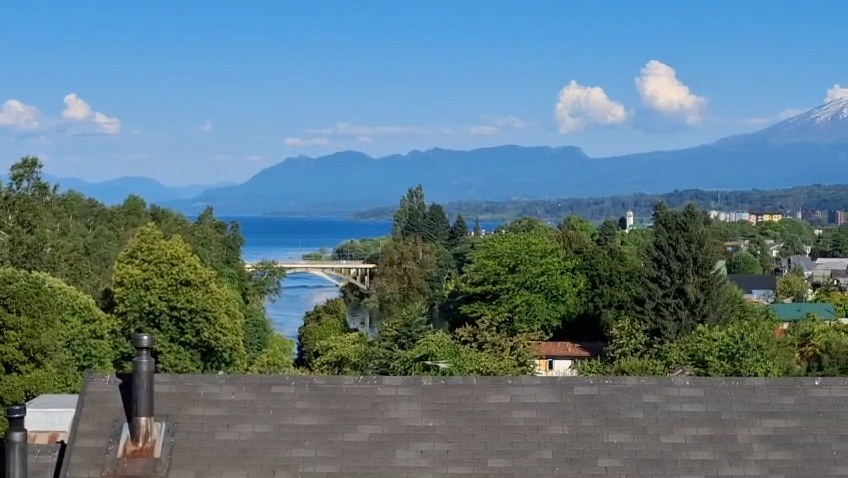

VIDEO PANORÁMICO 16:9
00:12 min
Exclusivo departamento en 5° piso en Condominio La Rivera, emplazado a orillas del río Toltén con triple vista panorámica al río, lago y volcán Villarrica. 113 m² totales con terraza cerrada en cristal plegable Lumon, muelle náutico privado y piscina exterior.
Villarrica, Región de La Araucanía • Construcción año 2020 en piso 5 con finas terminaciones, bodega privada y vista panorámica despejada al Río Toltén, Lago y Volcán Villarrica.
Pase el cursor o pulse sobre cualquier indicador superior para enfocar su ficha técnica.
90 m² útiles interiores + 23 m² de terraza panorámica cerrada con sistema plegable de cristal templado Lumon, transformando la vista al río y volcán en un salón disfrutable todo el año.
Dormitorio matrimonial en suite con amplio walk-in closet y salida directa a la terraza panorámica. Se suman dos dormitorios secundarios espaciosos con clósets empotrados y un segundo baño completo.
Emplazado en el quinto piso de una torre contemporánea de solo 7 niveles. Privacidad elevada, silencio acústico y perspectiva frontal sin obstrucciones hacia el Río Toltén, Lago y Volcán Villarrica.
Cocina contemporánea amoblada y equipada con encimera, horno y campana, logia funcional, ventanales termopanel de alta eficiencia térmica y terminaciones de primera línea para máximo confort sureño.
Cuenta con 1 estacionamiento cubierto protegido de lluvia y heladas invernales, junto a 1 bodega privada de gran capacidad para guardar equipamiento náutico, kayaks, tablas SUP, esquí y bicicletas.
Valor de venta: UF 7.770 (~$299.145.000 CLP). Código MZ12694. Títulos 100% saneados con rol propio individual, recepción municipal al día y apto para crédito hipotecario en cualquier banco.
Infraestructura privada de primer nivel a orillas del Río Toltén, diseñada para disfrutar el estilo de vida lacustre las cuatro estaciones con seguridad integral 24/7.
Bajada peatonal privada desde los jardines hacia la orilla del Río Toltén y muelle exclusivo para residentes. Ideal para zarpar en kayak, paddleboard, pesca con mosca o embarcaciones hacia la desembocadura del lago.
Amplia piscina al aire libre rodeada de áreas verdes consolidadas y reposeras solárium con vista abierta al entorno natural, pensada para disfrutar las tardes cálidas de la temporada lacustre.
Sala de acondicionamiento físico completa con máquinas cardiovasculares y pesas dentro del edificio, operativa durante todo el año para entrenar sin salir del condominio en días de lluvia o invierno.
Espacios comunes cerrados y finamente ambientados con parrilla en obra, mesones y mobiliario completo para recibir invitados y celebrar encuentros familiares en cualquier época del año.
Acceso vehicular y peatonal estrictamente controlado por conserjería permanente 24/7, cerco perimetral y circuito cerrado de vigilancia, ofreciendo tranquilidad absoluta como primera o segunda vivienda.
Extensas praderas privadas junto a vegetación nativa y sector de juegos infantiles en un recinto cerrado, libre de tránsito vehicular externo para que toda la familia disfrute con total libertad.
Registro real tomado desde la propiedad mirando hacia el puente sobre el río Toltén, el lago y el cono nevado del volcán Villarrica. Presione Play en la pantalla para reproducir aquí mismo o ábralo en Modo Cine.

Dos filas panorámicas en movimiento continuo mostrando vistas al volcán Villarrica, lago y río Toltén, la terraza cerrada en cristal Lumon, living comedor, dormitorio en suite y plano oficial de distribución.
Condominio La Rivera • A minutos del centro urbano, servicios, gastronomía y costanera.
Comuníquese directamente para agendar un recorrido presencial en Condominio La Rivera, consultar detalles de gastos comunes o solicitar la carpeta de títulos.
Precio: UF 7.770 (~$299.145.000 CLP).
Código de propiedad: MZ12694.
Disponibilidad: Entrega y firma notarial inmediata.